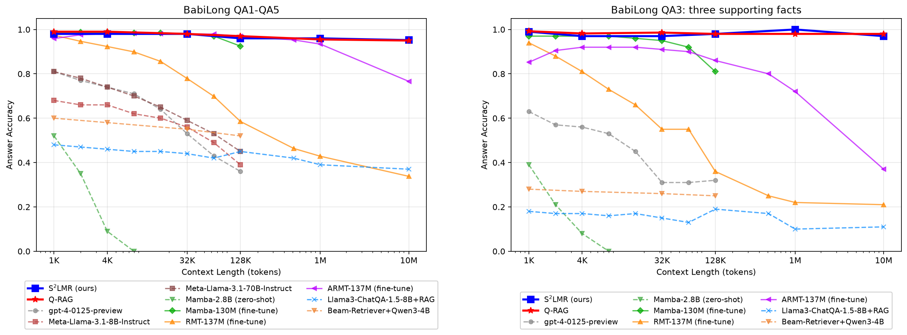
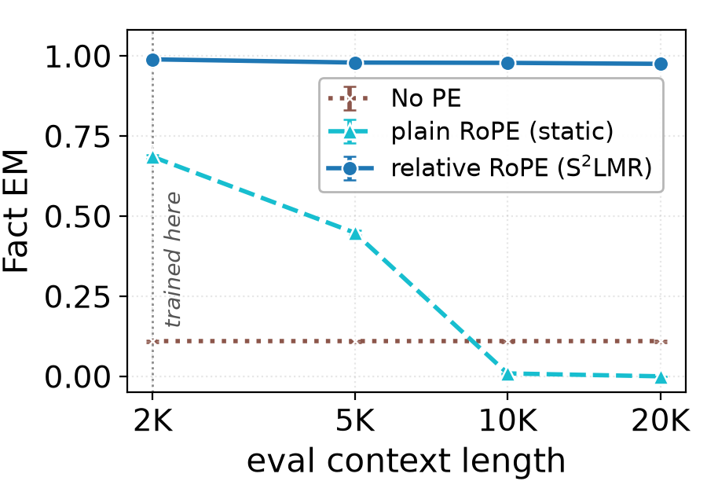
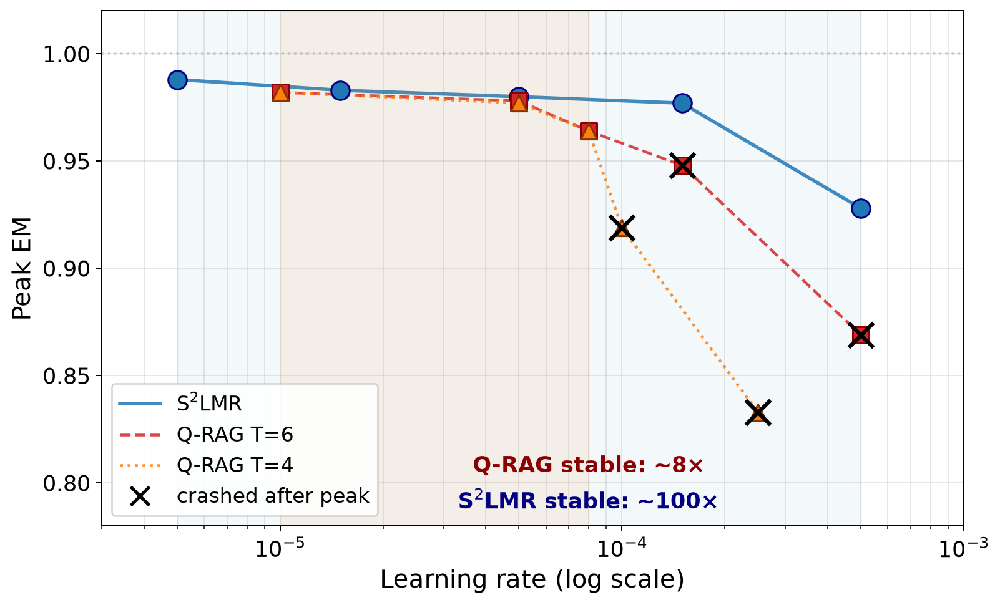
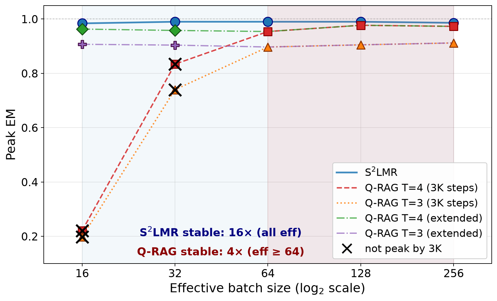

S2LMR
Supervised Sequential Long-Context Multi-Step Retriever
Align supervised training with inference, and a plain bi-encoder matches RL-trained retrieval from 4K to 10M tokens.
TL;DR
Supervised retrievers do not fall behind RL-trained ones on long-context multi-step retrieval because supervision is too weak; they fall behind because training does not match inference. S²LMR fixes three such mismatches with one shared bi-encoder and per-hop contrastive supervision. It matches or outperforms the RL-based Q-RAG on BabiLong, RULER, HotpotQA and MuSiQue at up to 10M tokens, trains in 2.25 GPU hours on BabiLong QA3, and stays stable across a wide range of learning rates and batch sizes.
Introduction
Can a simple supervised retriever handle million-token, multi-step retrieval?
Strong multi-step retrievers today rely on RL: value networks, target networks and temporal-difference updates. A bi-encoder trained with the standard DPR/MDR recipe, by contrast, reaches only 1.6% Fact EM on BabiLong QA3. We trace this gap to three places where supervised training does not look like inference.
Training negatives are too easy

In-batch negatives come from other questions and are easy to separate. The real competitors at test time are chunks of the same context, which overlap the gold chunk.
Fix: contrast the gold chunk against every other chunk of the same context.
Predicted prefixes add noise

Training later hops on the model’s own, sometimes wrong, picks blurs the supervision. With 400K candidates, hop-1 failure reaches 10%, against at most 3% with gold prefixes.
Fix: condition every hop on the gold prefix (teacher forcing).
Scores ignore where a chunk is
When evidence is positionally related, as in a story, a position-agnostic scorer picks the right chunk at only 20–47% of hops; all three hops succeed in 8.5% of examples.
Fix: score with Q-RAG’s chunk-axis positions, computed from the gold prefix during training.
Method
One shared encoder, supervised one hop at a time

Each hop t gets its own InfoNCE term, and the K terms are averaged:
Here cit⋆ is the gold chunk of hop t and 𝒜t is every chunk of the context not yet retrieved, so same-context chunks about the same entities are always in the denominator. All K hops get a direct gradient, with no rollouts, value networks or temporal-difference updates. At inference the gold prefix is replaced by the model’s own picks, and retrieval is greedy.
Experimental Results
From 4K to 10M tokens
Main results

S²LMR stays above 95% at 10M tokens and tracks Q-RAG across the full range, while Beam Retriever stays at 0.2–0.3 on QA3.
| Single needle | Multi-key | MV | MQ | NIAH | QA | |||||||
|---|---|---|---|---|---|---|---|---|---|---|---|---|
| Len | Method | 1 | 2 | 3 | 1 | 2 | 3 | Avg | SH | MH | ||
| 4K | ◦Titans | 98.4 | 99.8 | 89.4 | n/a | n/a | n/a | n/a | n/a | n/a | n/a | n/a |
| ◦Atlas | 99.2 | 100 | 90.6 | n/a | n/a | n/a | n/a | n/a | n/a | n/a | n/a | |
| ◦Mamba2-Hybrid | 100 | 100 | 95.7 | 89.5 | 95.5 | 96 | 97.9 | 97.6 | 96.5 | 56.5 | 48.8 | |
| ◦LongRoPE2-8B | 100 | 100 | 99 | 100 | 100 | 97 | 99.7 | 100 | 99.7 | 79 | 60 | |
| ✓Beam-Retriever | 100 | 98 | 98 | 98 | 98 | 97 | 98 | 99 | 98.5 | 29.0 | 39.0 | |
| ✓Q-RAG | 100 | 100 | 100 | 100 | 100 | 100 | 100 | 100 | 100 | 55 | 64 | |
| S²LMR | 100 | 100 | 100 | 100 | 100 | 100 | 100 | 100 | 100 | 56 | 64 | |
| 16K | ◦Titans | 96.2 | 80.2 | n/a | n/a | n/a | n/a | n/a | n/a | n/a | n/a | n/a |
| ◦Atlas | 97 | 84 | n/a | n/a | n/a | n/a | n/a | n/a | n/a | n/a | n/a | |
| ◦Mamba2-Hybrid | 100 | 100 | 81.5 | 92 | 92.2 | 83 | 89.8 | 90.2 | 91.1 | 48.8 | 44 | |
| ◦LongRoPE2-8B | 100 | 100 | 99 | 99 | 100 | 98 | 95 | 98.2 | 98.8 | 69 | 58 | |
| ✓Beam-Retriever | 100 | 100 | 97 | 96.5 | 96 | 95 | 80 | 98 | 95.3 | 24.0 | 35.0 | |
| ✓Q-RAG | 100 | 100 | 100 | 100 | 100 | 100 | 100 | 100 | 100 | 53 | 60 | |
| S²LMR | 100 | 100 | 100 | 100 | 100 | 100 | 100 | 100 | 100 | 51 | 62 | |
| 32K | ◦Mamba2-Hybrid | 100 | 100 | 96.7 | 84 | 76.5 | 81.5 | 84.3 | 80.9 | 88.0 | 41.8 | 38.5 |
| ◦LongRoPE2-8B | 100 | 100 | 100 | 99 | 98 | 100 | 98 | 96.2 | 98.9 | 72 | 55 | |
| ✓Q-RAG | 100 | 100 | 100 | 100 | 100 | 100 | 100 | 100 | 100 | 52 | 63 | |
| S²LMR | 100 | 100 | 100 | 100 | 100 | 100 | 100 | 100 | 100 | 50 | 63 | |
| 128K | ✓Mamba2-Hybrid | 100 | 92 | 96 | 81 | 81 | 75 | 48.8 | 72.5 | 80.8 | 36 | 26 |
| ◦LongRoPE2-8B | 100 | 100 | 99 | 96 | 91 | 94 | 96.5 | 97 | 96.7 | 56 | 50 | |
| ✓Q-RAG | 100 | 100 | 100 | 100 | 100 | 100 | 100 | 100 | 100 | 50 | 61 | |
| S²LMR | 100 | 100 | 100 | 100 | 100 | 100 | 100 | 100 | 100 | 47 | 62 | |
| 1M | ✓Q-RAG | 100 | 100 | 100 | 98.5 | 99.0 | 100 | 100 | 100 | 99.7 | 50 | 56 |
| S²LMR | 100 | 100 | 100 | 100 | 99.0 | 100 | 100 | 100 | 99.9 | 46 | 59 | |
◦ reported in the original papers; ✓ reproduced with released code or checkpoints (Mamba2-Hybrid at 128K: NVIDIA’s released 128K-context checkpoint). MV: multi-value; MQ: multi-query; SH / MH: single-hop / multi-hop QA (EM), with 1 (SH) and 3 (MH) retrieval steps as in the released Q-RAG code and a Qwen3-4B reader.
Both retrieval methods are near-perfect on every needle task up to 1M tokens. On QA, S²LMR matches or exceeds Q-RAG on multi-hop questions at every length and stays within 4 points on single-hop ones.
| Method | Fact F1 | Fact EM | Ans F1 | Ans EM |
|---|---|---|---|---|
| Fine-tuned | ||||
| ✓Q-RAG | 0.92 | 0.87 | 0.76 | 0.59 |
| ◦Beam-Retriever | 0.97 | 0.94 | 0.77 | 0.61 |
| ◦Search-R1 | 0.81 | 0.66 | 0.65 | 0.52 |
| ◦RAG-RL | 0.82 | – | 0.69 | – |
| S²LMR | 0.95 | 0.90 | 0.78 | 0.62 |
| Zero-shot | ||||
| ◦Multi-step RAG | 0.73 | 0.54 | 0.65 | 0.50 |
| ◦GraphReader | – | – | 0.46 | 0.24 |
| ◦Single-step RAG | – | – | 0.53 | 0.39 |
The best answer F1 and EM among the compared methods, with only the retriever fine-tuned and a frozen reader.
| Method | Fact F1 | Fact EM | Ans F1 | Ans EM |
|---|---|---|---|---|
| Fine-tuned | ||||
| ✓Q-RAG | 0.78 | 0.57 | 0.55 | 0.41 |
| ◦Beam-Retriever | 0.86 | 0.69 | 0.59 | 0.43 |
| S²LMR | 0.83 | 0.67 | 0.56 | 0.42 |
| Zero-shot | ||||
| ◦Multi-step RAG | 0.51 | 0.30 | 0.40 | 0.27 |
| ◦GraphReader | – | – | 0.40 | 0.20 |
| ◦Single-step RAG | – | – | 0.28 | 0.17 |
All methods retrieve K = |gold| paragraphs; answers by QwQ-32B on the full dev set.
| Under Q-RAG’s protocol | Fact F1 | Fact EM | Ans F1 | Ans EM |
|---|---|---|---|---|
| Up to 4 picks, stop once all gold found | ||||
| Q-RAG (released) | 0.81 | 0.72 | 0.60 | 0.45 |
| S²LMR | 0.86 | 0.77 | 0.62 | 0.47 |
Q-RAG’s own evaluation protocol: up to 4 picks, and an episode ends once all gold facts are retrieved. Q-RAG uses the authors’ released checkpoint.
Under either retrieval protocol, S²LMR is ahead of Q-RAG on all four metrics.
In-depth analysis
| Variant (BabiLong QA3) | Fact EM | ΔEM |
|---|---|---|
| S²LMR (full) | 0.99 | – |
| − Issue 1: in-batch instead of same-context negatives | 0.28 | −0.71 |
| − Issue 2: beam-expanded instead of teacher-forced hops (B=2) | 0.95 | −0.04 |
| − Issue 3: no chunk-axis positional encoding | 0.11 | −0.89 |



Each fix matters; together they account for the gap between a vanilla supervised bi-encoder and S²LMR.
| BabiLong QA3 · one A6000 | Train (h) | 1K | 32K | 128K | 1M | 10M |
|---|---|---|---|---|---|---|
| Retrieval only, s / sample (+0.44 s for the Qwen3-4B answer) | ||||||
| S²LMR | 2.25 | 0.20 | 1.00 | 3.20 | 27.8 | 279 |
| Q-RAG | 54.4 | 0.20 | 1.10 | 3.42 | 29.0 | 318 |
| Beam Retriever | ~450 | 1.2 | 39 | 155 | ~1200 | ~12000 |
| End-to-end fine-tuned, s / sample | ||||||
| RMT-137M | ~20 | 0.21 | 0.90 | 3.15 | 24.5 | 253 |
| Llama3-8B + RAG | >40 | 0.65 | 0.75 | 1.23 | 7.82 | 64.8 |
| Mamba-130M | >400 | 4.21 | 81.8 | OOM | OOM | OOM |
| End-to-end zero-shot, s / sample | ||||||
| Mamba-2.8B | 0 | 8.81 | 133 | OOM | OOM | OOM |
| Llama-3.1-8B | 0 | 0.61 | 11.9 | 49 | limit | limit |
Q-RAG: full schedule of its released configuration. OOM: out of memory; limit: exceeds the model’s context length.
At the same learning rate, S²LMR reaches its peak in about 1.4 GPU hours, against about 3 for Q-RAG, and retrieval is as fast as Q-RAG’s at every length.


S²LMR stays near peak over about 100× in learning rate and 16× in batch size; Q-RAG over about 8× and 4×.
| Unknown K (MuSiQue) | Fact EM | #picks |
|---|---|---|
| Known K = |gold| | 0.67 | 2.65 |
| Fixed T = 2 / 3 / 4 | 0.39 / 0.65 / 0.77 | 2 / 3 / 4 |
| Score threshold | 0.63 | 2.60 |
| Learned stop | 0.65 | 2.70 |
The trained retriever is fixed; stopping thresholds are calibrated with 2-fold cross-validation on the dev set.
| Cross-dataset | → MuSiQue | → HotpotQA |
|---|---|---|
| Q-RAG | 0.55 | 0.68 |
| S²LMR | 0.54 | 0.76 |
| S²LMR, order-agnostic | 0.60 | 0.77 |
Fact EM when trained on the other dataset, evaluated with Q-RAG’s protocol. Order-agnostic: a soft minimum of the loss over all orderings of the gold set, so no hop order is needed.
Gold hop order and a known K are not required: a learned stop recovers most of the known-K Fact EM, order-agnostic training transfers best across datasets, and training on LLM pseudo-labels derived from the answer alone reaches 0.88 Fact EM on HotpotQA, against 0.90 with gold labels.
Citation
@article{hu2026s2lmr,
title = {{S$^2$LMR}: Supervised Sequential Long-Context Multi-Step Retriever},
author = {Hu, Qiang and Ji, Kaiyi},
journal = {arXiv preprint arXiv:2611.28995},
year = {2026}
}